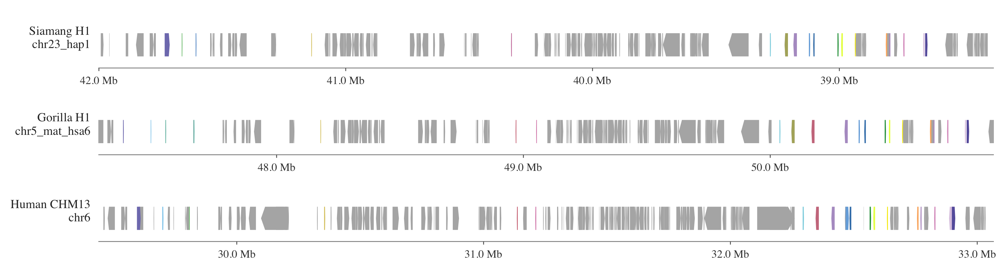
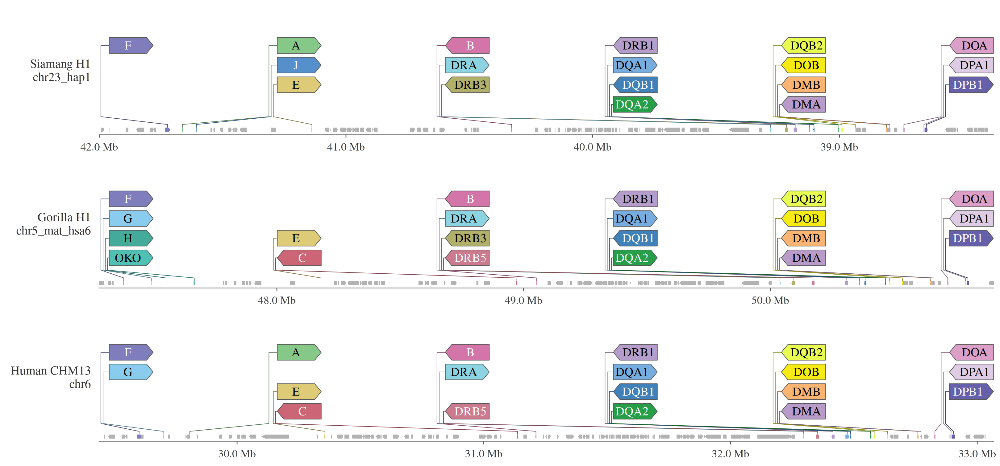
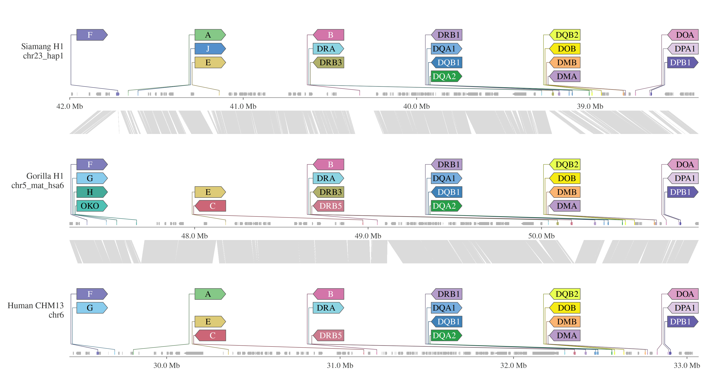

4. Visualizing megabase-scale haplotypes
Source:vignettes/mhc-continuous-demo.Rmd
mhc-continuous-demo.RmdCompare three MHC haplotypes
Compare Siamang H1, Gorilla H1, and
Human CHM13 across the major histocompatibility complex
(MHC). Prepare their gene annotations, two direct DNA alignments, and
panel layouts in one SynSpecies, then draw gene spans, add
labelled gene-lollipop heads, and connect the haplotypes with nucleotide
ribbons.
The inputs retain 58 curated functional MHC genes and non-pseudogene background models from the browser accompanying Yoo et al. (2025). Each window covers 3.63 Mb around the MHC genes, giving a shorter view than the earlier full-region comparison. All plotting inputs are bundled and work offline. Detailed sources and filtering rules are in the data README.
Present the inputs
The bundle contains one gene annotation per haplotype and one direct alignment for each adjacent pair:
| Files | Contents | Syn object |
|---|---|---|
SSYh1.gff3, GGOh1.gff3,
HSAh1.gff3
|
Curated MHC spans and representative background gene spans |
SynIndividual, with a feature
annotation |
SSYh1_GGOh1.paf |
Siamang H1 versus Gorilla H1 | SynPairAlignment |
GGOh1_HSAh1.paf |
Gorilla H1 versus Human CHM13 | SynPairAlignment |
windows.tsv |
Native chromosomes, assembly coordinates, and display orientation | Stored panel limits |
Curated MHC pseudogenes and background records annotated as pseudogenes are excluded before writing the GFF3 files. One representative transcript supplies each background gene span. Source transcripts overlapping the same curated MHC locus are excluded from the background layer to avoid duplicates. The GFF3 files contain gene spans, not reconstructed exon structures.
Locate the installed inputs and inspect the selected windows:
library(ggexon)
library(ggplot2)
demo_dir <- system.file("extdata", "mhc_haplotypes", package = "ggexon")
stopifnot(nzchar(demo_dir))
windows <- read.delim(file.path(demo_dir, "windows.tsv"))
haplotype_ids <- windows$track
knitr::kable(windows[, c("label", "assembly", "chr", "start", "end", "orientation")],
row.names = FALSE)| label | assembly | chr | start | end | orientation |
|---|---|---|---|---|---|
| Siamang H1 | mSymSyn1_v2.0 | chr23_hap1 | 38374018 | 42002223 | - |
| Gorilla H1 | mGorGor1_v2.0 | chr5_mat_hsa6 | 47277843 | 50906048 | + |
| Human CHM13 | T2T-CHM13v2.0 | chr6 | 29439185 | 33067390 | + |
GFF3 and the displayed windows use one-based inclusive native assembly coordinates. Raw PAF starts are zero-based; ggexon converts them on import. The Siamang chromosome runs in the opposite orientation to the other two haplotypes. Keep all input coordinates and strands unchanged; the facet will reverse the Siamang axis when drawing.
Prepare the comparative Syn object
Attach the gene annotations
Create one individual per haplotype and collect them in a
SynSpecies:
comparison <- SynSpecies(name = "Three MHC haplotypes")
for (id in haplotype_ids) {
w <- windows[windows$track == id, ]
individual <- SynIndividual(
id = id,
annotation_file = file.path(demo_dir, paste0(id, ".gff3")),
annotation_format = "gff",
metadata = list(assembly = w$assembly, chromosome = w$chr)
)
comparison <- add_individual(comparison, individual)
}
individual_names(comparison)
#> [1] "SSYh1" "GGOh1" "HSAh1"Each feature annotation stores the native gene spans, strand, source label, and a role identifying either curated MHC or background context.
Attach the two direct alignments
The upper haplotype is the target and the lower haplotype is the query. Use the same individual IDs as above:
for (i in seq_len(length(haplotype_ids) - 1L)) {
target <- haplotype_ids[i]
query <- haplotype_ids[i + 1L]
name <- paste(target, query, sep = "_")
comparison <- add_pairwise_alignment(comparison, SynPairAlignment(
name = name,
target_individual = target,
query_individual = query,
file = file.path(demo_dir, paste0(name, ".paf")),
format = "paf"
))
}
alignment_names <- names(comparison@pairwise_alignments)
vapply(alignment_names, function(name)
nrow(pairwise_alignment_data(comparison, alignment = name)), integer(1))
#> SSYh1_GGOh1 GGOh1_HSAh1
#> 108 44These are direct minimap2 alignments of the selected native DNA windows. The Siamang-Gorilla comparison uses H1 in both species. It is not inferred through a removed haplotype. Large indels split the alignment into ribbon spans; short internal indels remain within each span.
Prepare the shared gene-lollipop grid
Select functional MHC genes from the annotations already attached to the object. Use their curated source keys to identify matching genes, and Human CHM13 to define the reference gene order:
mhc_order <- c("F", "G", "H", "OKO", "A", "J", "E", "C", "B", "DRA",
"DRB3", "DRB5", "DRB1", "DQA1", "DQB1", "DQA2", "DQB2", "DOB",
"DMB", "DMA", "DOA", "DPA1", "DPB1")
comparison <- prepare_gene_lollipop(comparison,
name = "mhc", reference = "HSAh1", key = "plot_label",
where = list(gene_role = "MHC"), nrow = 4, ncol = 6,
order = mhc_order)
mhc_genes <- query_gene_lollipop(comparison, component = "genes")
mhc_slots <- query_gene_lollipop(comparison, component = "slots")
# The example helper prepares only the grey native-span background view.
source(file.path(demo_dir, "prepare-mhc-example.R"), local = TRUE)
comparison <- prepare_mhc_context(comparison)
context_genes <- mhc_plot_data(comparison, "context")
knitr::kable(data.frame(
haplotype = windows$label,
MHC = as.integer(table(factor(mhc_genes$track, haplotype_ids))),
background = as.integer(table(factor(context_genes$track, haplotype_ids)))
), row.names = FALSE)| haplotype | MHC | background |
|---|---|---|
| Siamang H1 | 18 | 138 |
| Gorilla H1 | 21 | 121 |
| Human CHM13 | 19 | 184 |
prepare_gene_lollipop() stores native gene anchors and a
shared four-row, six-column grid inside the Syn object.
Matching keys occupy the same cell in every haplotype. The geom will
discover this preparation automatically; use
lollipop_layout = "mhc" when the object contains several
prepared grids.
Reference order is the default. The selected human genes lack
H, OKO, J, and DRB3;
flanking genes do not uniquely order every insertion relative to the
other human genes. mhc_order records the explicit display
order for this curated comparison instead of manually assigning rows or
columns. For data with unambiguous flanks, omit order to
assign the order automatically.
query_gene_lollipop() lets us inspect both the native
genes and slot occupancy before plotting. The small example helper is
only for the grey background spans; it does not compute lollipop data or
head positions.
Prepare a five-row chain and store its genomic bounds before plotting:
comparison <- store_chain_layout(comparison, free = list(x = TRUE, y = FALSE))
for (id in haplotype_ids) {
w <- windows[windows$track == id, ]
comparison <- set_panel_xlim(comparison, individual = id,
xlim = c(w$start, w$end), xlim_chr = w$chr)
}
comparison@layout@panels[, c("PANEL", "track", "panel_type")]
#> PANEL track panel_type
#> 1 1 SSYh1 annotation
#> 2 2 link_SSYh1_GGOh1 link
#> 3 3 GGOh1 annotation
#> 4 4 link_GGOh1_HSAh1 link
#> 5 5 HSAh1 annotation
# Reuse the same annotations for the first two stages, without link rows.
annotation_view <- comparison
annotation_panels <- comparison@layout@panels
annotation_panels <- annotation_panels[annotation_panels$panel_type == "annotation", ]
annotation_panels$PANEL <- annotation_panels$ROW <- seq_len(nrow(annotation_panels))
species_layout(annotation_view) <- SynLayout(panels = annotation_panels,
free = list(x = TRUE, y = FALSE))The complete object has three annotation panels and two link panels. The annotation-only view reuses its individuals, annotations, and prepared gene data. Its layout contains only the three annotation rows.
Build the plot layer by layer
Define the shared style
Each haplotype has its own native genomic axis. The selected windows
have equal base-pair spans, so equal horizontal distances represent
equal genomic distances. reverse_x = "SSYh1" reverses only
the Siamang display; its tick labels count down and the ribbons inherit
that source-panel transformation.
base_size <- 8
base_family <- "serif"
strip_labels <- setNames(paste(windows$label, windows$chr, sep = "\n"), haplotype_ids)
gene_limits <- setNames(rep(list(c(-0.15, 0.65)), length(haplotype_ids)), haplotype_ids)
head_limits <- setNames(rep(list(c(-0.2, 9)), length(haplotype_ids)), haplotype_ids)
plot_style <- list(
scale_x_continuous(
breaks = scales::breaks_width(1e6),
labels = scales::label_number(scale = 1e-6, suffix = " Mb", accuracy = 0.1),
expand = expansion(mult = 0), oob = scales::oob_keep
),
facet_genomics(vars(track), ncol = 1, scales = "free_x",
strip.position = "left", reverse_x = "SSYh1",
link_panel_height = 0.25, link_axis = "none", link_strip = "blank",
annotation_axis = "all", labeller = as_labeller(strip_labels)),
labs(x = NULL, y = NULL),
theme_ggexon_track(base_size = base_size, base_family = base_family,
show_x_axis = TRUE, show_y_axis = FALSE, show_x_grid = FALSE,
show_legend = FALSE),
theme_ggexon_side_strips("left", base_size = base_size, face = "plain"),
theme(strip.text.y.left = element_text(angle = 0),
panel.spacing.y = grid::unit(1.5, "mm"),
plot.margin = margin(4, 4, 4, 4))
)Draw native gene spans
Draw background genes in grey and MHC genes in their source ortholog colours. Both layers use actual gene widths and strands. Colours pass directly from the stored annotation through the prepared views:
gene_layers <- list(
geom_genetag(data = function(model) mhc_plot_data(model, "context"),
aes(xmin = xmin, xmax = xmax, y = ymin + 0.15,
strand = strand, track = track),
exon_height = 0.3, show_label = FALSE,
fill = "grey70", colour = NA, inherit.aes = FALSE),
geom_genetag(data = function(model) mhc_plot_data(model, "MHC"),
aes(xmin = xmin, xmax = xmax, y = 0.15,
strand = strand, track = track, fill = I(fill)),
exon_height = 0.3, show_label = FALSE, colour = NA, inherit.aes = FALSE)
)
p_genes <- ggexon(annotation_view) + gene_layers + plot_style +
scale_panel_annotation("free_y", limits = gene_limits)
p_genes
Small MHC arrows are expected at a megabase scale. They retain the curated span; their widths are not expanded to fit a label.
Add the gene-lollipop heads
Add geom_gene_lollipop() above the native gene row. Each
functional MHC gene gets an enlarged directional head with its label
inside and a leader anchored at the true midpoint of its stored span.
The small arrows below retain gene widths; the heads have a fixed
physical size for readability at this scale.
The prepared row and column assignments put matching source keys in the same grid cell across haplotypes. Head columns are evenly spaced and aligned across the three panels, while the leaders retain native genomic anchors. Read each column from top to bottom, then move to the next column. Empty cells remain reserved and do not establish gene absence.
head_layer <- geom_gene_lollipop(
y = 0.3, headroom = 8, max_rows = 4, max_shift_mm = 85,
head_height_mm = 3.6, padding_mm = 0.5, tip_mm = 1.5,
gap_mm = 0.8, row_gap_mm = 0.7, stem_height_mm = 1,
anchor_tick_mm = 0.7, fan_height_mm = 1.8,
lane_spacing_mm = 0.5, lane_clearance_mm = 0.4,
stem_linewidth = 0.18, stem_halo_mm = 0.1,
size = base_size / ggplot2::.pt, family = base_family,
colour = "grey35", linewidth = 0.2,
inherit.aes = FALSE, show.legend = FALSE
)
p_heads <- ggexon(annotation_view) + gene_layers + head_layer + plot_style +
scale_panel_annotation("free_y", limits = head_limits)
p_heads
headroom reserves y space above the native gene row. The
*_mm arguments control head sizes and spacing on the output
device. This regular grid uses an explicit 85 mm displacement allowance
because its columns align across panels rather than following each local
cluster. Native gene spans and leader anchors remain unchanged. The
short labels are source keys such as B, DRA,
and DQB1; species prefixes remain in the stored gene
names.
Connect the haplotypes with nucleotide ribbons
Select the two alignments stored in comparison by name,
then use the complete five-panel object:
link_layers <- lapply(alignment_names, function(name)
geom_nuclink(alignment = name, fill = "grey65", colour = NA, alpha = 0.4))
p_mhc <- ggexon(comparison) + gene_layers + head_layer + link_layers +
plot_style + scale_panel_annotation("free_y", limits = head_limits)
p_mhc
Curated MHC and CAT/RefSeq background annotations from the Yoo et al. (2025) browser accompany direct minimap2 alignments of Siamang H1, Gorilla H1, and Human CHM13; enlarged heads occupy a shared display grid and leaders mark native gene midpoints.
There are 108 Siamang-Gorilla and 44 Gorilla-human ribbon spans. They show aligned DNA intervals, including short internal indels. Gaps between ribbons can reflect alignment filtering or unaligned sequence and do not establish gene absence. Source functional status is an annotation category, not experimental validation.
link_panel_height = 0.25 keeps each link row one quarter
of an annotation row’s relative height. Reduce this value for a tighter
figure, or use a physical height such as
grid::unit(7, "mm"):
p_mhc + facet_genomics(vars(track), ncol = 1, scales = "free_x",
strip.position = "left", reverse_x = "SSYh1",
link_panel_height = grid::unit(7, "mm"),
link_axis = "none", link_strip = "blank", annotation_axis = "all",
labeller = as_labeller(strip_labels))